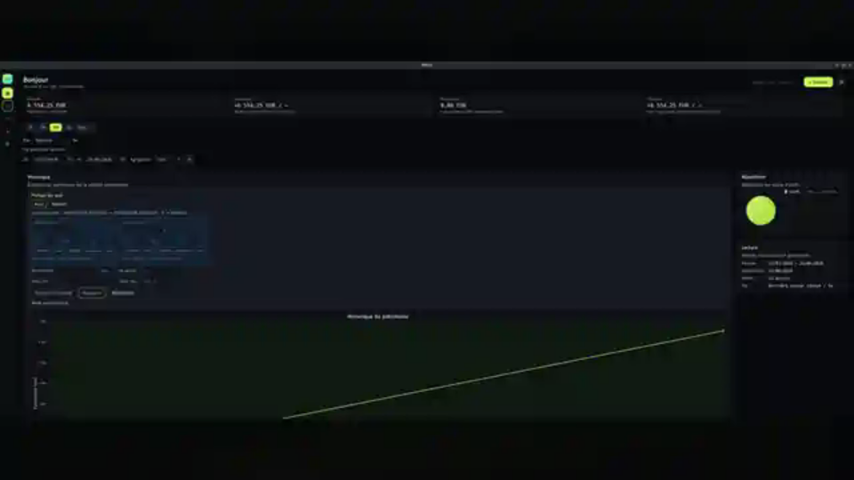
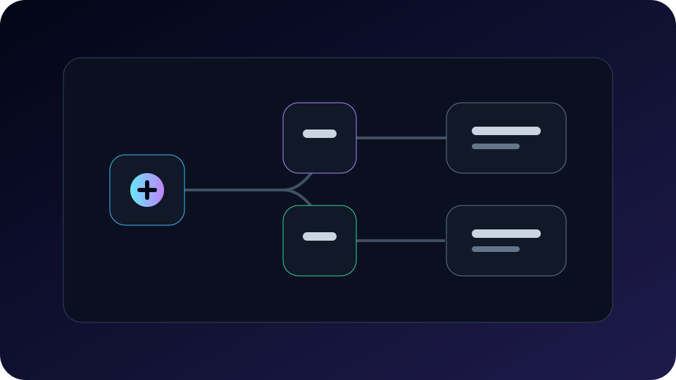
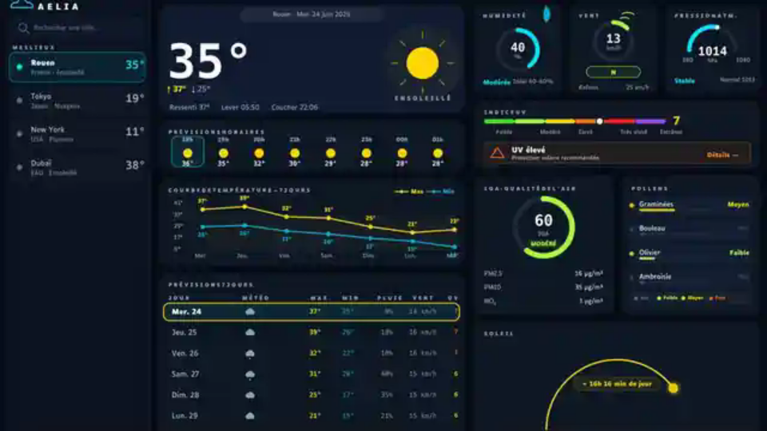

API & services
REST, GraphQL, validation, logique métier, OpenAPI, sécurité et contrats applicatifs.
Backend · API · Données · Applications métier
Je conçois des applications complètes : API, logique métier, bases de données, pipelines applicatifs, interfaces desktop et outils internes.
Recherche une alternance d’un an à partir d’octobre 2026 pour valider une troisième année de bachelor.
Positionnement
Java reste une base solide, mais le positionnement du portfolio met surtout en avant la capacité à construire des services, des API, des modèles de données et des applications exploitables.
REST, GraphQL, validation, logique métier, OpenAPI, sécurité et contrats applicatifs.
PostgreSQL, SQL, Flyway, Redis, modèles de données, snapshots et historiques fiables.
Découpage domaine/application/persistance, Maven multi-module, port/adaptateur, documentation.
JavaFX, applications desktop, UI métier, ergonomie, accessibilité et clarté des écrans.
Projets
Les projets sont présentés comme preuves de conception : problème traité, architecture, stack, décisions et limites.

Application web de streaming vidéo avec authentification, catalogue, administration média, upload, streaming MP4/HLS et pipeline FFmpeg.

Application local-first de suivi patrimonial : comptes, actifs, positions, snapshots, flux financiers, valorisation et indicateurs de performance.

Moteur et éditeur de jeux vidéo en 2D et 3D permettant de concevoir ses propres jeux à l’aide d’outils graphiques.

Plateforme graphique d’assistants, workflows et automatisations boostés à l’IA, exécutables localement sans dépendre d’une connexion Internet.

Application météo JavaFX avec fournisseur simulé, données météo/air/UV/pollen, thème sombre, contraste renforcé et contrôles clavier.
Compétences
Une lecture orientée recruteur : pas une liste brute, mais des blocs directement reliés à des besoins projet.
Spring Boot, FastAPI, Flask, REST, GraphQL, OpenAPI, validation métier.
Java, Python, C, C++, Rust, JavaScript, TypeScript, SQL, Bash, PowerShell.
PostgreSQL, MongoDB, SQL, Flyway, Redis, modélisation et historiques.
JavaFX, AtlantaFX, Swing, Android Java/Kotlin, Flutter, .NET MAUI.
HTML, CSS, JavaScript, React, Angular, Vue.js, Svelte, UI responsive.
Ollama, vLLM, Llama.cpp, LM Studio, Hugging Face, workflows et agents.
Git, CI/CD, Docker Compose, Kubernetes, Maven, Gradle, Linux, SSH/SFTP.
Tests unitaires, tests E2E, analyse, Kanban, Jira, Trello, Notion, documentation.
Parcours
Troisième année en alternance, objectif de validation bac+3.
Immersion au siège social : gestion de projet, organisation, management et équipe.
Amélioration d’une application Android de partage photo/vidéo pour cadres connectés et conception d’un boîtier TV connecté B2D.
Formation en alternance.
Comptabilité, juridique, communication et marketing.
Mathématiques, sciences de l’ingénieur, NSI, physique-chimie et mathématiques expertes.
Impact
Le portfolio garde une orientation technique, tout en montrant l’intérêt pour les projets à impact concret.
Bénévolat et adhésion : accompagnement, ateliers d’aide à l’emploi et participation associative.
Projet à mission d’impact dédié à l’inclusion et à l’accessibilité du handicap.
Sciences, numérique, informatique, électronique, IA locale et systèmes Linux.
Contact
Profil disponible pour une alternance d’un an à partir d’octobre 2026. Les contacts complets sont disponibles dans le CV PDF.